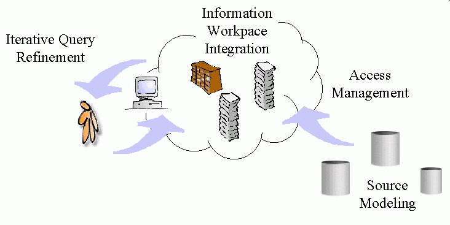

Summary of:
"Rich Interaction in the Digital Library"
Article in Communications of the ACM, Vol. 38, No. 4, pages
29-39; April 1995.
By Ramana Rao, Jan O. Pedersen, Marti A. Hearst and Jock D. Mackinlay
et al.
This is a summary, done by Dick Stenmark and Kerstin Forsberg, as part of our Human-Computer Interaction - HCI course at the Viktoria Institute for Research on Information Technology Use. See more about this on Kerstin's HCI-page and Dick's homepage.
An Information Workspace


Example Tools
Scatter/Gather

| Scatter/Gather is a cluster-based browsing technique for large text collections. Users are presented with automatically computed summaries of the contents of clusters of similar documents and provided with a method for navigating through these summaries at different levels of granularity. The aim of the technique is to communicate information about the topic structure of very large collections.
|
Tile Bars
|
| Making use of text structure when retrieving from full text documents, and presents a visualization paradigm, called TileBars, that demonstrates the usefulness of explicit term distribution information in Boolean-type queries. TileBars simultaneously and compactly indicate relative document length, query term frequency, and query term distribution.
| |

Butterfly
|
| An Information Visualizer application for accessing DIALOG's Science Citation databases across the Internet. Integrating search, browsing, and access management via four techniques: 1) visualization supports the assimilation of retrieved information and integrates search and browsing activity, 2) automatically-created ``link-generating'' queries assemble bibliographic records that contain reference information into citation graphs, 3) asynchronous query processes explore the resulting graphs for the user, and 4) process controllers allow the user to manage these processes.
| |

Hyperbolic Tree
|
| A focus+context (fisheye) scheme for visualizing and manipulating large
hierarchies. Assigning more space to a portion of the hierarchy while still embedding it in a
much larger context. Change of focus is accomplished by translating the structure on the
hyperbolic plane, which allows a smooth transition without compromising the presentation of
the context.
| |

Summary: Concepts
Iterative Query Refinement
Supporting; exploratory learning and query refinement
Source Modeling
Information relationships
Refine the workspace
Access Management
Metadata for source selection, access infrastructure with common protocol
Information Workpace Integration
An environment designed to support information-intensive work. From a WIMP interface (Windows Icons Mouse Point-and-click) to a richer interaction using faster perceptual processes helping the user understand and navigate
The authors 1995 - Today
1995
All at Xerox Palo Alto Research Center (PARC)
Today, spring 1997
Ramana Rao: Chief technical officer, InXight,a Xerox New Enterprise Company
Jan O. Pedersen: Head of Verity Advanced Technology Group
George G. Robertson: Senior Researcher, Microsoft Research
Marti A. Hearst: Still at PARC
et al.
Resources
Magazines, Articles
- Interfaces for Searching the Web,
Scientific American, Special Report, by Marti A. Hearst
The rapid growth of the World Wide Web is outpacing current attempts to search and organize it. New user interfaces may offer a better approach. - D-Lib Magazine: The Magazine of Digital Library Research
Links
- Interfaces for Information Access, Companion Pages for Scientific American Article
- Research in Support of Digital Libraries at Xerox PARC
- VizControls™ Technology
User Interface Components for Exploring Large Amounts of Information
Updated by Kerstin Forsberg 1 May 1997
Back to Kerstin Forsberg's HCI-page
Back to Dick's homepage